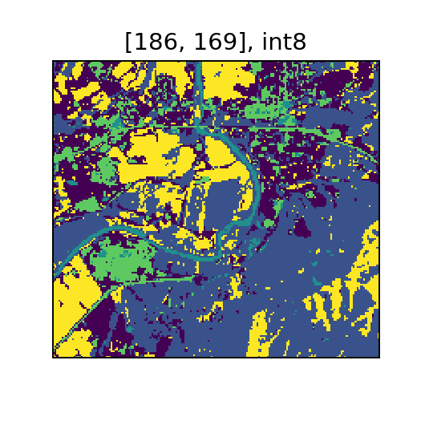

Unsupervised Machine Learning
In this example, we will demonstrate how to fit and score an unsupervised learning model with a sample of Landsat 8 data.
Imports and Data Preparation
We import various Spark components needed to construct our Pipeline.
import pandas as pd
from pyrasterframes import TileExploder
from pyrasterframes.rasterfunctions import rf_assemble_tile, rf_crs, rf_extent, rf_tile, rf_dimensions
from pyspark.ml.feature import VectorAssembler
from pyspark.ml.clustering import KMeans
from pyspark.ml import Pipeline
The first step is to create a Spark DataFrame of our imagery data. To achieve that we will create a catalog DataFrame using the pattern from the I/O page. In the catalog, each row represents a distinct area and time, and each column is the URI to a band’s image product. The resulting Spark DataFrame may have many rows per URI, with a column corresponding to each band.
filenamePattern = "https://github.com/locationtech/rasterframes/" \
"raw/develop/core/src/test/resources/L8-B{}-Elkton-VA.tiff"
catalog_df = pd.DataFrame([
{'b' + str(b): filenamePattern.format(b) for b in range(1, 8)}
])
df = spark.read.raster(catalog_df, catalog_col_names=catalog_df.columns)
df = df.withColumn('crs', rf_crs(df.b1)) \
.withColumn('extent', rf_crs(df.b1))
df.printSchema()
root
|-- b1_path: string (nullable = false)
|-- b2_path: string (nullable = false)
|-- b3_path: string (nullable = false)
|-- b4_path: string (nullable = false)
|-- b5_path: string (nullable = false)
|-- b6_path: string (nullable = false)
|-- b7_path: string (nullable = false)
|-- b1: struct (nullable = true)
| |-- tile_context: struct (nullable = true)
| | |-- extent: struct (nullable = false)
| | | |-- xmin: double (nullable = false)
| | | |-- ymin: double (nullable = false)
| | | |-- xmax: double (nullable = false)
| | | |-- ymax: double (nullable = false)
| | |-- crs: struct (nullable = false)
| | | |-- crsProj4: string (nullable = false)
| |-- tile: tile (nullable = false)
|-- b2: struct (nullable = true)
| |-- tile_context: struct (nullable = true)
| | |-- extent: struct (nullable = false)
| | | |-- xmin: double (nullable = false)
| | | |-- ymin: double (nullable = false)
| | | |-- xmax: double (nullable = false)
| | | |-- ymax: double (nullable = false)
| | |-- crs: struct (nullable = false)
| | | |-- crsProj4: string (nullable = false)
| |-- tile: tile (nullable = false)
|-- b3: struct (nullable = true)
| |-- tile_context: struct (nullable = true)
| | |-- extent: struct (nullable = false)
| | | |-- xmin: double (nullable = false)
| | | |-- ymin: double (nullable = false)
| | | |-- xmax: double (nullable = false)
| | | |-- ymax: double (nullable = false)
| | |-- crs: struct (nullable = false)
| | | |-- crsProj4: string (nullable = false)
| |-- tile: tile (nullable = false)
|-- b4: struct (nullable = true)
| |-- tile_context: struct (nullable = true)
| | |-- extent: struct (nullable = false)
| | | |-- xmin: double (nullable = false)
| | | |-- ymin: double (nullable = false)
| | | |-- xmax: double (nullable = false)
| | | |-- ymax: double (nullable = false)
| | |-- crs: struct (nullable = false)
| | | |-- crsProj4: string (nullable = false)
| |-- tile: tile (nullable = false)
|-- b5: struct (nullable = true)
| |-- tile_context: struct (nullable = true)
| | |-- extent: struct (nullable = false)
| | | |-- xmin: double (nullable = false)
| | | |-- ymin: double (nullable = false)
| | | |-- xmax: double (nullable = false)
| | | |-- ymax: double (nullable = false)
| | |-- crs: struct (nullable = false)
| | | |-- crsProj4: string (nullable = false)
| |-- tile: tile (nullable = false)
|-- b6: struct (nullable = true)
| |-- tile_context: struct (nullable = true)
| | |-- extent: struct (nullable = false)
| | | |-- xmin: double (nullable = false)
| | | |-- ymin: double (nullable = false)
| | | |-- xmax: double (nullable = false)
| | | |-- ymax: double (nullable = false)
| | |-- crs: struct (nullable = false)
| | | |-- crsProj4: string (nullable = false)
| |-- tile: tile (nullable = false)
|-- b7: struct (nullable = true)
| |-- tile_context: struct (nullable = true)
| | |-- extent: struct (nullable = false)
| | | |-- xmin: double (nullable = false)
| | | |-- ymin: double (nullable = false)
| | | |-- xmax: double (nullable = false)
| | | |-- ymax: double (nullable = false)
| | |-- crs: struct (nullable = false)
| | | |-- crsProj4: string (nullable = false)
| |-- tile: tile (nullable = false)
|-- crs: struct (nullable = true)
| |-- crsProj4: string (nullable = false)
|-- extent: struct (nullable = true)
| |-- crsProj4: string (nullable = false)
Create ML Pipeline
SparkML requires that each observation be in its own row, and features for each observation be packed into a single Vector. For this unsupervised learning problem, we will treat each pixel as an observation and each band as a feature. The first step is to “explode” the tiles into a single row per pixel. In RasterFrames, generally a pixel is called a cell.
exploder = TileExploder()
To “vectorize” the the band columns, we use the SparkML VectorAssembler. Each of the seven bands is a different feature.
assembler = VectorAssembler() \
.setInputCols(list(catalog_df.columns)) \
.setOutputCol("features")
For this problem, we will use the K-means clustering algorithm and configure our model to have 5 clusters.
kmeans = KMeans().setK(5).setFeaturesCol('features')
We can combine the above stages into a single Pipeline.
pipeline = Pipeline().setStages([exploder, assembler, kmeans])
Fit the Model and Score
Fitting the pipeline actually executes exploding the tiles, assembling the features vectors, and fitting the K-means clustering model.
model = pipeline.fit(df)
We can use the transform function to score the training data in the fitted pipeline model. This will add a column called prediction with the closest cluster identifier.
clustered = model.transform(df)
Now let’s take a look at some sample output.
clustered.select('prediction', 'extent', 'column_index', 'row_index', 'features')
Showing only top 5 rows.
| prediction | extent | column_index | row_index | features |
|---|---|---|---|---|
| 4 | [+proj=utm +zone=17 +datum=WGS84 +units=m +no_defs ] | 0 | 0 | [9470.0,8491.0,7805.0,6697.0,17507.0,10338.0,7235.0] |
| 4 | [+proj=utm +zone=17 +datum=WGS84 +units=m +no_defs ] | 1 | 0 | [9566.0,8607.0,8046.0,6898.0,18504.0,11545.0,7877.0] |
| 0 | [+proj=utm +zone=17 +datum=WGS84 +units=m +no_defs ] | 2 | 0 | [9703.0,8808.0,8377.0,7222.0,20556.0,13207.0,8686.0] |
| 3 | [+proj=utm +zone=17 +datum=WGS84 +units=m +no_defs ] | 3 | 0 | [9856.0,8983.0,8565.0,7557.0,19479.0,13203.0,9065.0] |
| 3 | [+proj=utm +zone=17 +datum=WGS84 +units=m +no_defs ] | 4 | 0 | [10105.0,9270.0,8851.0,7912.0,19074.0,12737.0,8947.0] |
If we want to inspect the model statistics, the SparkML API requires us to go through this unfortunate contortion to access the clustering results:
cluster_stage = model.stages[2]
We can then compute the sum of squared distances of points to their nearest center, which is elemental to most cluster quality metrics.
metric = cluster_stage.computeCost(clustered)
print("Within set sum of squared errors: %s" % metric)
Within set sum of squared errors: 227877499083.48096
Visualize Prediction
We can recreate the tiled data structure using the metadata added by the TileExploder pipeline stage.
from pyrasterframes.rf_types import CellType
tile_dims = df.select(rf_dimensions(df.b1).alias('dims')).first()['dims']
retiled = clustered.groupBy('extent', 'crs') \
.agg(
rf_assemble_tile('column_index', 'row_index', 'prediction',
tile_dims['cols'], tile_dims['rows'], CellType.int8()).alias('prediction')
)
retiled.printSchema()
root
|-- extent: struct (nullable = true)
| |-- crsProj4: string (nullable = false)
|-- crs: struct (nullable = true)
| |-- crsProj4: string (nullable = false)
|-- prediction: tile (nullable = true)
retiled
| extent | crs | prediction |
|---|---|---|
| [+proj=utm +zone=17 +datum=WGS84 +units=m +no_defs ] | [+proj=utm +zone=17 +datum=WGS84 +units=m +no_defs ] | ![]() |
The resulting output is shown below.
display(retiled.select('prediction').first()['prediction'])
